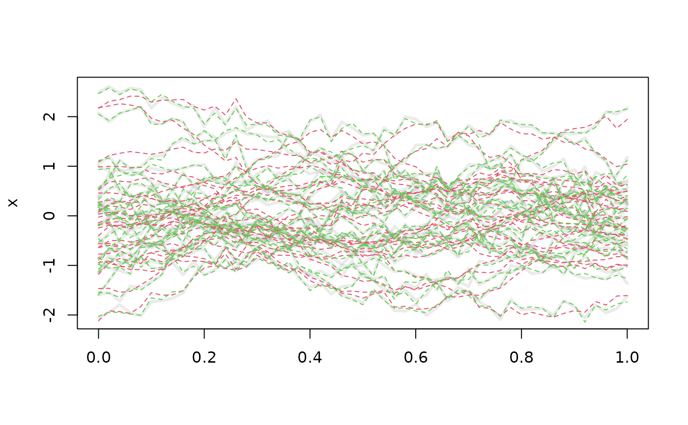
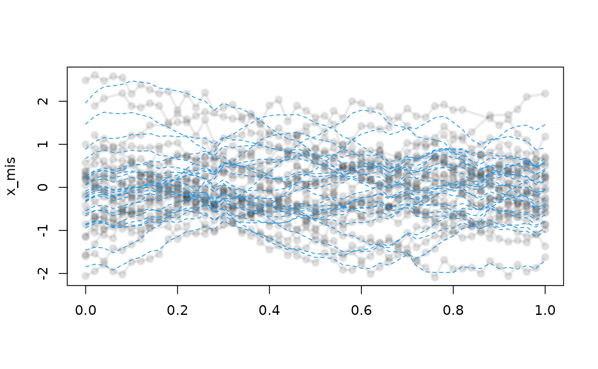
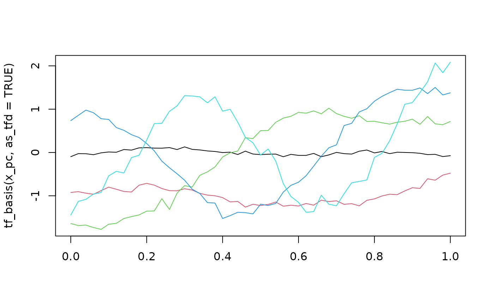
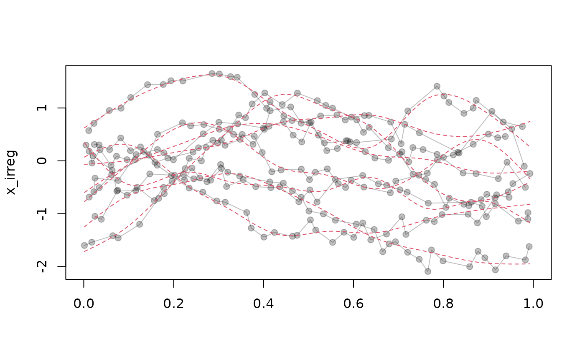

These functions perform a (functional) principal component analysis (FPCA) of
the input data and return an tfb_fpc tf-object that uses the empirical
eigenfunctions as basis functions for representing the data. The default
("method = fpc_wsvd") uses a (truncated) weighted SVD for complete
data on a common grid and a nuclear-norm regularized (truncated) weighted SVD
for partially missing data on a common grid, see fpc_wsvd().
The latter is likely to break down for high PVE and/or high amounts of
missingness.
Usage
tfb_fpc(data, ...)
# S3 method for data.frame
tfb_fpc(
data,
id = 1,
arg = 2,
value = 3,
domain = NULL,
method = fpc_wsvd,
...
)
# S3 method for matrix
tfb_fpc(data, arg = NULL, domain = NULL, method = fpc_wsvd, ...)
# S3 method for numeric
tfb_fpc(data, arg = NULL, domain = NULL, method = fpc_wsvd, ...)
# S3 method for tf
tfb_fpc(data, arg = NULL, method = fpc_wsvd, ...)
# S3 method for default
tfb_fpc(data, arg = NULL, domain = NULL, method = fpc_wsvd, ...)Arguments
- data
a
matrix,data.frameorlistof suitable shape, or anothertf-object containing functional data.- ...
arguments to the
methodwhich computes the (regularized/smoothed) FPCA - see e.g.fpc_wsvd(). Unless set by the user, uses proportion of variance explainedpve = 0.995to determine the truncation levels.- id
The name or number of the column defining which data belong to which function.
- arg
numeric, or list ofnumerics. The evaluation grid. For thedata.frame-method: the name/number of the column defining the evaluation grid. Thematrixmethod will try to guess suitablearg-values from the column names ofdataifargis not supplied. Other methods fall back on integer sequences (1:<length of data>) as the default if not provided.- value
The name or number of the column containing the function evaluations.
- domain
range of the
arg.- method
the function to use that computes eigenfunctions and scores. Defaults to
fpc_wsvd(), which is quick and easy but returns completely unsmoothed eigenfunctions unlikely to be suited for noisy data.
Value
an object of class tfb_fpc, inheriting from tfb.
The basis used by tfb_fpc is a tfd-vector containing the estimated
mean and eigenfunctions.
Details
For the FPC basis, any factorization method that accepts a data.frame with
columns id, arg, value containing the functional data and returns a
list with eigenfunctions and FPC scores structured like the return object
of fpc_wsvd() can be used for the `method`` argument, see example below.
Note that the mean function, with a fixed "score" of 1 for all functions,
is used as the first basis function for all FPC bases.
Methods (by class)
tfb_fpc(default): converttfb: default method, returning prototype when data is NULL
See also
fpc_wsvd() for FPCA options.
Other tfb-class:
fpc_wsvd(),
tfb,
tfb_spline()
Other tfb_fpc-class:
fpc_wsvd()
Examples
set.seed(13121)
x <- tf_rgp(25, nugget = .02)
x_pc <- tfb_fpc(x, pve = .9)
x_pc
#> tfb[25] on (0,1) in basis representation:
#> using 4 FPCs
#> 1: (0.00,-0.138);(0.02,-0.067);(0.04,-0.046); ...
#> 2: (0.00, 0.12);(0.02, 0.20);(0.04, 0.18); ...
#> 3: (0.00, -0.94);(0.02, -0.91);(0.04, -1.02); ...
#> 4: (0.00, -0.40);(0.02, -0.21);(0.04, -0.19); ...
#> 5: (0.00, -1.5);(0.02, -1.5);(0.04, -1.5); ...
#> [....] (20 not shown)
plot(x, lwd = 3)
lines(x_pc, col = 2, lty = 2)
x_pc_full <- tfb_fpc(x, pve = .995)
x_pc_full
#> tfb[25] on (0,1) in basis representation:
#> using 15 FPCs
#> 1: (0.00, 0.172);(0.02,-0.019);(0.04, 0.238); ...
#> 2: (0.00, 0.20);(0.02, 0.37);(0.04, 0.29); ...
#> 3: (0.00, -0.98);(0.02, -1.05);(0.04, -1.03); ...
#> 4: (0.00, -0.99);(0.02, -0.65);(0.04, -0.47); ...
#> 5: (0.00, -1.5);(0.02, -1.6);(0.04, -1.6); ...
#> [....] (20 not shown)
lines(x_pc_full, col = 3, lty = 2)

# partially missing data on common grid:
x_mis <- x |> tf_sparsify(dropout = .05)
x_pc_mis <- tfb_fpc(x_mis, pve = .9)
#> Using softImpute SVD on 5.3% missing data
x_pc_mis
#> tfb[25] on (0,1) in basis representation:
#> using 4 FPCs
#> 1: (0.00,-0.207);(0.02,-0.084);(0.04,-0.046); ...
#> 2: (0.00, 0.055);(0.02, 0.167);(0.04, 0.197); ...
#> 3: (0.00, -0.85);(0.02, -0.78);(0.04, -0.78); ...
#> 4: (0.00, -0.34);(0.02, -0.20);(0.04, -0.15); ...
#> 5: (0.00, -1.5);(0.02, -1.4);(0.04, -1.4); ...
#> [....] (20 not shown)
plot(x_mis, lwd = 3)
lines(x_pc_mis, col = 4, lty = 2)

# extract FPC basis --
# first "eigenvector" in black is (always) the mean function
x_pc |> tf_basis(as_tfd = TRUE) |> plot(col = 1:5)

# \donttest{
# Apply FPCA for sparse, irregular data using refund::fpca.sc:
set.seed(99290)
# create sparse, irregular data:
x_irreg <- x |>
tf_jiggle() |> tf_sparsify(dropout = 0.3)
plot(x_irreg)
x_df <- x_irreg |>
as.data.frame(unnest = TRUE)
# wrap refund::fpca_sc for use as FPCA method in tfb_fpc:
fpca_sc_wrapper <- function(data, arg, pve = 0.995, ...) {
data_mat <- tfd(data) |> as.matrix(interpolate = TRUE)
fpca <- refund::fpca.sc(
Y = data_mat, argvals = attr(data_mat, "arg"), pve = pve, ...
)
c(fpca[c("mu", "efunctions", "scores", "npc")],
scoring_function = tf:::.fpc_wsvd_scores)
}
x_pc <- tfb_fpc(x_df, method = fpca_sc_wrapper)
lines(x_pc, col = 2, lty = 2)

# }